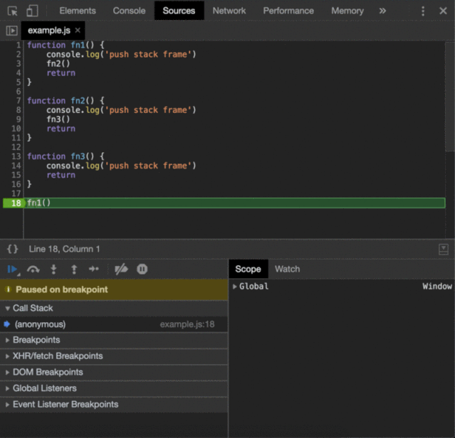
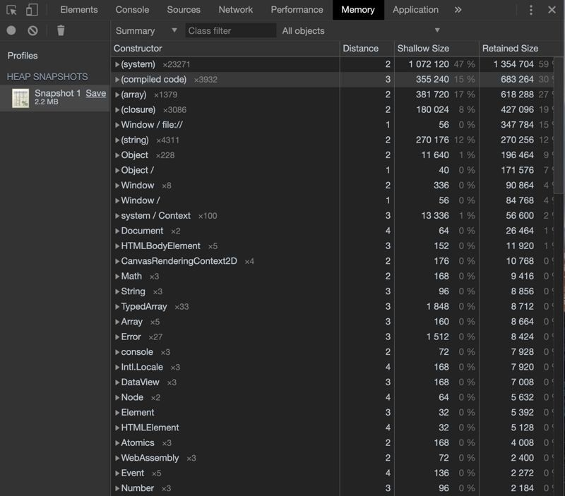
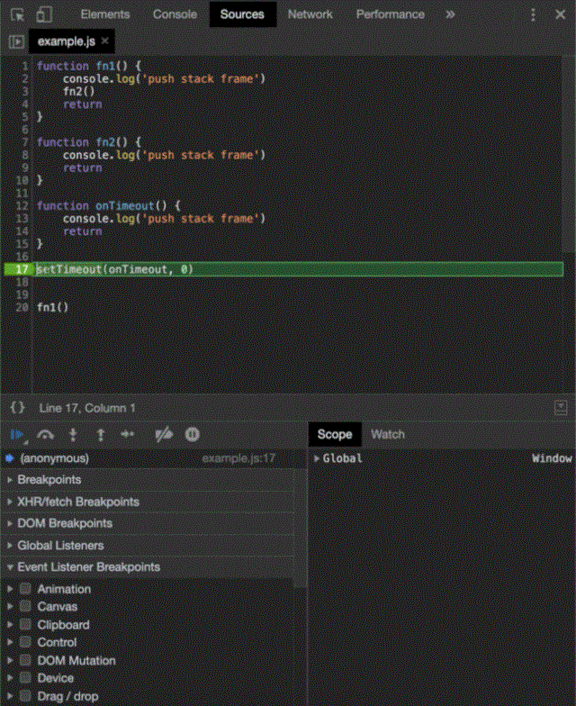
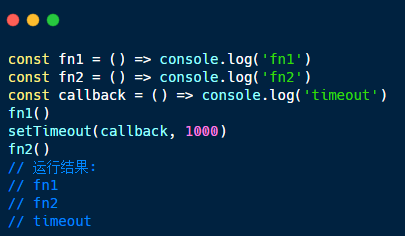
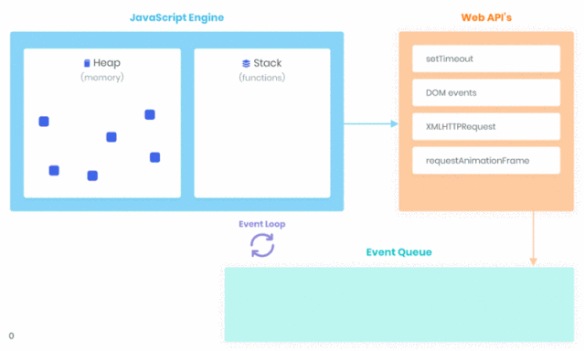
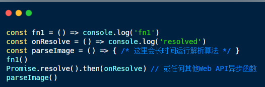
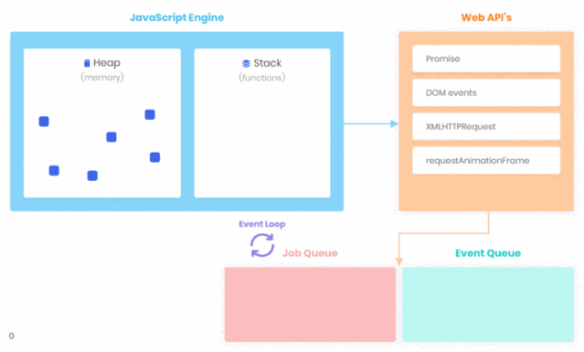

JavaScript内部原理
简介
Javascript 是一种奇怪语言，有些人喜欢它，有些人讨厌它。它有许多独特的机制，这些机制在其他流行语言中不存在，也没有对应的机制，还有突出明显的就是代码的执行顺序
了解浏览器环境，它的组成以及它的工作原理会让我们在编写 JS 时更加自信，并为可能发生的潜在问题做好了充分的准备。
在这篇文章中，我们试着解释一下Chrome浏览器下到底发生了什么，来一起看看：
V8 Javascript 引擎编译步骤，堆和内存管理，调用堆栈。 浏览器运行时并发模型、事件循环、阻塞和非阻塞代码。
JavaScript引擎
最流行的JavaScript引擎是V8，它是用c++编写的，并被基于Chrome的浏览器使用，如Chrome、Opera甚至Edge。基本上，这个引擎是一个将 JS 转换成机器码并在计算机的中央处理器(CPU)上执行结果的程序。
编译
当浏览器加载 JS 文件时，V8的解析器将其转换为一个抽象语法树(AST)。该树用于生成字节码的解释器。字节码是一种可以通过编译成非优化的机器码来执行的机器码的抽象。V8在主线程中执行它，而优化编译器TurboFan在另一个线程中进行一些优化并生成优化的机器码。
这个管道称为即时(JIT)编译。

调用堆栈
JavaScript 是一种单线程编程语言，只有一个调用堆栈。它意味着我们的代码是同步执行的。每当一个函数运行时，它将在任何其他代码运行之前完全运行。
当V8调用 JS 函数时，它必须将运行时数据存储在某个地方。调用堆栈是内存中由堆栈帧组成的位置。每个堆栈帧对应于一个尚未被调用函数。堆栈结构由以下组成：
局部变量 argument 参数 返回地址
如果我们执行一个函数，V8 会将帧推到栈顶。当我们从一个函数返回时，V8 会跳出帧。
如上例所示，在每次函数调用时都会创建一个帧，并在每个return语句中将其删除。
其他所有内容都动态地分配到一个称为堆的大型非结构化内存块中。
堆(Heap)
有时V8在编译时不知道对象变量需要多少内存。此类数据的所有内存分配都发生在堆中。退出分配内存的函数后，堆上的对象继续存在。
V8有一个内置的垃圾收集器(GC)。垃圾收集是内存管理的一种形式。它就像一个收集器，试图释放不再使用的对象占用的内存。换句话说，当一个变量失去所有引用时，GC将该内存标记为不可访问并释放它。
我们可以通过在Chrome开发工具中创建快照来研究堆。
实例化的每个 JS 对象都分组在其构造函数类下。括号中的分组表示不能直接调用的原生构造函数。可以看到有很多(编译代码)和(系统)实例，但也有一些传统的 JS 对象，如Math、String、Array等。
浏览器运行时
V8可以根据标准，同步地使用一个调用堆栈来执行 JS 。但，我们需要渲染UI，需要处理用户与UI的交互。此外，我们还需要在发出网络请求时处理用户交互，对此却无能为力。当所有代码都是同步的时候，我们如何实现并发呢? 这还得感谢浏览器引擎。
浏览器引擎负责用 HTML 和 CSS 渲染页面。在 Chrome 中它被称为Blink。它是WebCore的一个分支，Blink 是一个布局、渲染和文档对象模型(DOM)库。Blink 是用 c++ 中实现的，它提供了DOM元素和事件、XMLHttpRequest、fetch、setTimeout、setInterval等 Web api，这些api可以通过 JS 访问。
我们一起思考下面带有setTimeout(onTimeout, 0)的示例：
可以看到，浏览器首先将f1()和f2()函数推入堆栈，然后执行onTimeout。那么上面的示例如何工作？
并发性
setTimeout函数执行后，浏览器引擎立即将setTimeout的回调函数放入一个事件表中。它是一个数据结构，将注册的回调映射到事件，在我们的例子中是onTimeout函数映射到timeout事件。
一旦计时器到时，在本例中，我们将延迟设为0 ms，则立即触发事件，并将onTimeout函数放入事件队列（又名回调队列，消息队列或任务队列）中。事件队列是一种数据结构，由将来要处理的回调函数（任务）组成。
最后且重要的是，事件循环(一个不断运行的循环)检查调用堆栈是否为空。如果是，则执行从事件队列中添加的第一个回调，从而移动到调用堆栈。
函数的处理将继续，直到调用堆栈再次为空。然后，事件循环将处理事件队列中的下一个回调(如果有的话)。
各部分的关系：
注意onResolve1、onResolve2和onTimeout回调的执行顺序。
阻塞和非阻塞
简单地说，所有 JS 代码都被认为是阻塞的。当 V8 忙于处理堆栈帧时，浏览器被卡住了，应用程序的 UI 被阻塞。用户将无法单击、导航或滚动。直到 V8 完成它的工作，才会处理来自网络请求的响应。
想象一下，我们如果在浏览器中运行的程序中解析图像。
各部分的关系：
在上面的示例中，事件循环被阻止。它无法处理事件/作业队列中的回调，因为调用堆栈包含这一帧。
Web API 为我们提供了通过异步回调来编写非阻塞代码的可能性。当调用像setTimeout或fetch这样的函数时，我们把所有的工作委托给c++原生代码，它在一个单独的线程中运行。一旦操作完成，回调就被放入事件队列。同时，V8可以继续执行 JS 代码。
使用这种并发模型，我们可以处理网络请求、用户与UI的交互等等，而不会阻塞 JS 执行线程。
总结
对于希望能够解决复杂任务的每个开发人员来说，理解 JS 环境由什么组成是至关重要的。现在我们知道了异步JavaScript是如何工作的，调用堆栈、事件循环、事件队列和作业队列在其并发模型中的角色。
你可能已经猜到的，在V8引擎和浏览器引擎后面还有很多工作要做。然而，我们大多数人只是需要对所有这些概念有一个基本的理解。如果上面的文章对你有帮助，请点击"在看"呦。
https://medium.com/better-programming/internals-under-the-hood-of-a-browser-f357378cc922N
本页共63段，3342个字符，7175 Byte(字节)